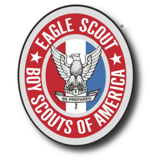

About Me
My name is Brian Guidry and I am a senior studying Computer Engineering at the University of South Florida. I have a passion for puzzles and challenges, as well as a deep set fascination with cutting edge technology. I cracked the Rubik’s Cube at age 12 and started programming at 14. Aside from technology I love to play my trumpet. Recently I was asked to join King High School, my alma mater, to perform with them at Carnegie Hall in April 2016. I am currently practicing with their Wind Ensemble and Full Orchestra; as well leading the trumpet section when we have break out rehearsals.
Experience
My first work experience outside of volunteering was an internship with ThreatTrack Security in the summer of 2014. I worked as a software tester in Quality Assurance, working to discover, identify, and record bugs in their VIPRE Antivirus software. During my time there I got to participate in SCRUM development and work closely with everyone on the project. A large portion of my time there was spent regression testing a completely new version of the consumer edition which was just coded from scratch in Windows Presentation Foundation.
Volunteering
Before my work at ThreatTrack I volunteered all of the time, especially at Moffitt Cancer Center. I spent nearly every day during high school summer break either with my Boy Scout troop or volunteering at Moffitt. At Moffitt I worked many different jobs, from guiding patients around the hospital to working the snack cart. But the job I enjoyed and did the most was assisting the CT scan technicians. There I got to interact directly with patients as well as learn about and how to use the amazing technology there behind the scenes.

Leadership
I received my Eagle Scout at age 13. Only one or two out of every hundred boy scouts achieve the rank of Eagle Scout and most of them get it at 17 or 18. Scouting was my favorite activity growing up, and taught me many essential skills I still use today including first-aid and leadership skills. The confidence and responsibility I have in leadership positions today is due to boy scouts. Through scouting I worked at a rifle range, a Cub Scout camp, and was even voted the founding president of our troops new Venturing Crew.